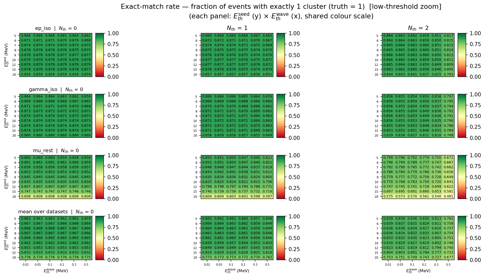
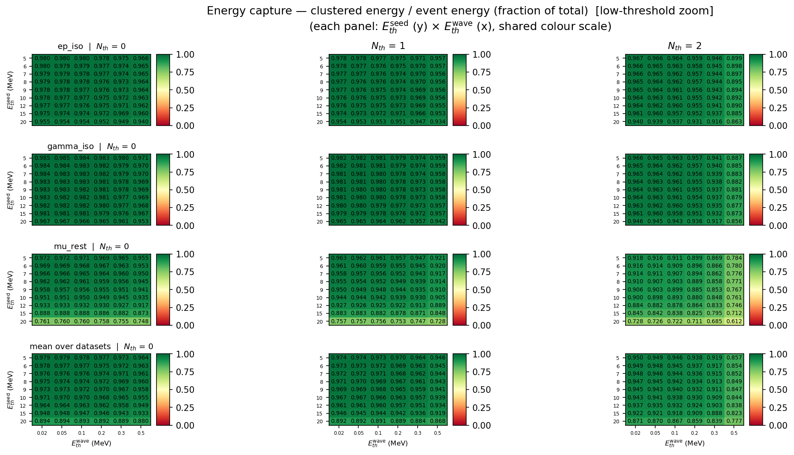
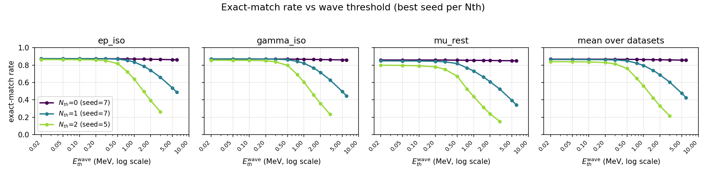
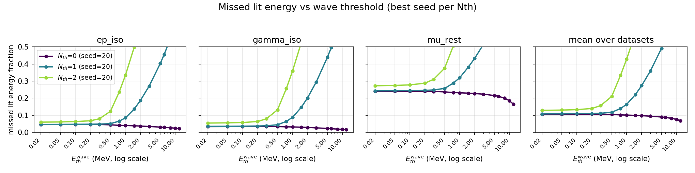

本文件是 26-10-16 的后续，专门解决该报告 §7 未决事项的第 2、3 条：
Nth 的最优点都顶在
Eth_wave 网格下界 0.1 MeV，需要补 0.02 / 0.05 MeV
确认平台位置，并检查更低阈值是否会让噪声重新导致过分裂；Eth_seed 在 7–15 MeV
几乎平坦，需要在 5–10 MeV 之间加密（对能谱较软的 mu_rest
尤其重要）。结果放在新目录
pytrial/results/sweep/26-10-16-refined/，上一轮结果原样保留。
| 项 | 26-10-16 | 26-10-16-refined（本轮） |
|---|---|---|
Eth_seed (MeV) |
5, 7, 10, 12, 15, 20 | 5, 6, 7, 8, 9, 10, 12, 15, 20 |
Eth_wave (MeV) |
0.1 … 12（16 点） | 0.02, 0.05, 0.1, 0.2, 0.3, 0.5, 0.75, 1.0, 1.5, 2.0, 3.0, 5.0, 6.0, 8.0, 10.0, 12.0（16 点） |
Nth |
0, 1, 2 | 0, 1, 2 |
| 数据集 / 事例数 | 3 × 50 000 | 3 × 50 000 |
| 点数 | 420 | 124 × 3 × 3 = 1116，0 失败 |
| 拓扑 | ecal_neighbor_info.root |
同左 |
新增点： * 低阈值：Eth_wave = 0.02, 0.05（第 2 条）； *
种子加密：Eth_seed = 6, 8, 9（第 3 条）。 *
为控制规模，去掉上轮的信息量较低的
Eth_wave = 2.5, 4.0；其余 14 个波前阈值与上轮完全一致，
可直接逐点对比。
复现（一条命令，网格写在脚本里）：
cd pytrial
bash sweeps/run_refined.sh # 扫描 + 分析；结果写入 26-10-16-refined/
bash sweeps/run_refined.sh --force # 强制重算
bash sweeps/run_refined.sh --csv-only # 只从缓存重建 CSV + 图config.py 的 ETH_SEED_VALUES /
ETH_WAVE_VALUES 现支持 ECAL_SWEEP_SEEDS /
ECAL_SWEEP_WAVES 覆盖，RESULTS_DATE
与工作区缓存 TAG 已解耦， 因此不同 campaign
可以并存而不互相污染。
Eth_wave < 0.1 MeV 的平台已确认在每个 Nth 各自最优 seed 下（三数据集平均）：
Nth |
seed | Eth_wave |
exact-match | 能量捕获 | 未簇化能量 | frac_3plus |
平均团簇数 |
|---|---|---|---|---|---|---|---|
| 0 | 7 | 0.02 | 0.8678 | 0.9764 | 0.0236 | 0.00013 | 0.8828 |
| 0 | 7 | 0.05 | 0.8677 | 0.9761 | 0.0239 | 0.00013 | 0.8829 |
| 0 | 7 | 0.10 | 0.8677 | 0.9755 | 0.0245 | 0.00013 | 0.8830 |
| 0 | 7 | 0.20 | 0.8673 | 0.9739 | 0.0261 | 0.00013 | 0.8833 |
| 1 | 7 | 0.02 | 0.8641 | 0.9723 | 0.0277 | 0.00008 | 0.8741 |
| 1 | 7 | 0.05 | 0.8638 | 0.9717 | 0.0283 | 0.00008 | 0.8738 |
| 1 | 7 | 0.10 | 0.8634 | 0.9708 | 0.0292 | 0.00008 | 0.8733 |
| 1 | 7 | 0.20 | 0.8620 | 0.9683 | 0.0317 | 0.00008 | 0.8720 |
| 2 | 5 | 0.02 | 0.8393 | 0.9504 | 0.0496 | 0.00003 | 0.8468 |
| 2 | 5 | 0.05 | 0.8381 | 0.9488 | 0.0512 | 0.00003 | 0.8454 |
| 2 | 5 | 0.10 | 0.8358 | 0.9460 | 0.0540 | 0.00002 | 0.8427 |
| 2 | 5 | 0.20 | 0.8295 | 0.9383 | 0.0617 | 0.00001 | 0.8356 |
结论：0.02 → 0.1 MeV 的变化可以忽略。
Nth |
Δexact (0.1 − 0.02) | Δ能量捕获 (0.1 − 0.02) | Δ未簇化能量 |
|---|---|---|---|
| 0 | −0.0001 | −0.0009 | +0.0009 |
| 1 | −0.0007 | −0.0015 | +0.0015 |
| 2 | −0.0035 | −0.0044 | +0.0044 |
即 0.1 MeV 已经落在平台上；继续降到 0.05 或 0.02
最多再换来 0.1–0.35 个百分点 （Nth=2
最大），没有新的物理机制出现。
没有出现”低阈值噪声过分裂”。 frac_3plus
在 0.02–0.2 区间完全不变（Nth=0/1/2 分别 为 1.3×10⁻⁴ /
8×10⁻⁵ / 3×10⁻⁵），平均团簇数只从 0.8830 变到
0.8828（Nth=0）。低阈值多吸进来的
是同一簇射的外圈软沉积，而不是新的独立团簇。这与
lit_energy_missed_fraction 随阈值降低而
单调下降的图像一致（见
heatmap_energy_captured_fraction_per_nth_low.png）。

heatmap_exact_match_rate_per_nth_low.png — 0.02–0.5
MeV 放大：0.02 / 0.05 / 0.1 三列几乎同色， 平台一目了然；0.2 起
Nth=2 开始明显下滑。

heatmap_energy_captured_fraction_per_nth_low.png —
同一窗口的能量捕获率。
mu_rest 最优点移动在 Eth_wave = 0.02、三数据集平均下，exact-match 随 seed
的变化：
Eth_seed (MeV) |
5 | 6 | 7 | 8 | 9 | 10 | 12 | 15 | 20 |
|---|---|---|---|---|---|---|---|---|---|
Nth=0 |
0.8634 | 0.8670 | 0.8678 | 0.8674 | 0.8655 | 0.8625 | 0.8534 | 0.8326 | 0.7755 |
Nth=1 |
0.8624 | 0.8640 | 0.8641 | 0.8631 | 0.8610 | 0.8580 | 0.8492 | 0.8291 | 0.7731 |
Nth=2 |
0.8393 | 0.8387 | 0.8376 | 0.8358 | 0.8335 | 0.8304 | 0.8225 | 0.8045 | 0.7525 |
Nth=0/1：6–8 MeV 是一个很宽的平台，峰值在 7
MeV（6 与 7 只差 0.08 / 0.01 个百分点）。
种子再低（5）会放进更多低能噪声簇，再高（≥9）开始丢掉真实簇射的软事例——frac_0
从 seed=5 的 0.121 单调升到 seed=20 的 0.224。Nth=2：越低的 seed 越好，最优点仍在网格下界 5
MeV（因为两个近邻的要求已经很严，
再加高种子等于双重压制）。这是本轮唯一仍”顶在边界”的参数轴，但它是
Nth=2 的固有行为， 不是采样不足。5, 7, 10
恰好把峰夹住，所以没有漏掉大效应；加密后的收益主要是把最优区间
从”7 附近”收紧到”6–8”，并给出下面这个实际的改进：mu_rest 的最优点从
seed=5, wave=0.1（0.8597）移到
seed=6, wave=0.02（0.8614）， 提高 0.17 个百分点。
这正是第 3 条建议所预期的——软能谱数据集的种子最优值落在 5 与 7
之间。

profile_exact_match.png — 每个 Nth
取各自最优 seed，exact-match 随 Eth_wave 的变化（对数横轴，
含 0.02/0.05）。三条曲线在 0.02–0.1 完全重合，之后按 Nth
由小到大依次提前塌落。

profile_missed_energy.png —
被漏掉的点亮能量占比，同样在低阈值处进入平台。
| 指标 | 26-10-16 最优 | 26-10-16-refined 最优 | 变化 |
|---|---|---|---|
mean exact，Nth=0 |
0.8677 (7, 0.1) | 0.8678 (7, 0.02) | +0.0002 |
mean exact，Nth=1 |
0.8634 (7, 0.1) | 0.8641 (7, 0.02) | +0.0008 |
mean exact，Nth=2 |
0.8358 (5, 0.1) | 0.8393 (5, 0.02) | +0.0034 |
ep_iso 单数据集 |
0.8790 (12, 0.1) | 0.8790 (12, 0.02) | ±0 |
gamma_iso 单数据集 |
0.8743 (12, 0.1) | 0.8744 (12, 0.02) | +0.0001 |
mu_rest 单数据集 |
0.8597 (5, 0.1) | 0.8614 (6, 0.02) | +0.0017 |
总判断：上一轮的推荐（Nth=0/1,
seed≈7,
wave=0.1）是正确的；本轮把波前阈值的最优点 确认在
0.02–0.1 的平台内，并把种子最优区间收紧到 6–8 MeV。唯一实质改进是
mu_rest 与 Nth=2
的小幅提升，以及平台边界的定量确认。
Nth）| 数据集 | Nth |
seed | wave | exact-match | 能量捕获 | MAE |
|---|---|---|---|---|---|---|
ep_iso |
0 | 12 | 0.02 | 0.8790 | 0.9771 | 0.1210 |
gamma_iso |
0 | 12 | 0.02 | 0.8744 | 0.9824 | 0.1256 |
mu_rest |
0 | 6 | 0.02 | 0.8614 | 0.9694 | 0.1389 |
接受度地板仍是 ~0.88：Nth=0, seed=7 时
frac_0 = 0.1248，且从 0.02 到 12 MeV 完全不随
Eth_wave
变化（这些事例总沉积太低，任何阈值都无法成簇）。本轮没有突破该地板。
| 目标 | 建议 | 依据 |
|---|---|---|
| 单粒子簇数最准 | Nth=0, Eth_seed=7, Eth_wave=0.05 |
mean 0.8677；0.02/0.05/0.1 三者差 <0.0001，取平台中央更稳 |
| 兼顾能量捕获 | Nth=0, Eth_seed=6, Eth_wave=0.02 |
exact 0.8670，能量捕获 0.9778（比 seed=7 高 0.14 pp） |
| 能量优先 | Nth=0, Eth_seed=5, Eth_wave=0.02 |
能量捕获 0.9791（全场最高），exact 0.8634 |
mu_rest 专用 |
Nth=0, Eth_seed=6, Eth_wave=0.02 |
0.8614 |
| 抗噪（种子需 ≥1 近邻） | Nth=1, Eth_seed=7, Eth_wave=0.05 |
mean 0.8638，仅比 Nth=0 低
0.4 pp |
| 不建议 | Nth=2 及任何
Eth_wave ≥ 1 MeV 的组合 |
Nth=2 仍低 2.85
pp；高波前阈值会切断簇射 |
Eth_wave 在 0.02–0.1 MeV
之间任取均可；Eth_seed 取 6–8
MeV；Nth 取 0 或 1。
| 文件 | 内容 |
|---|---|
sweep_summary.csv |
1116 行 × 32 列完整指标 |
best_params.md /
best_params.html |
各指标最优点（“mean”
行已修正为真正的三数据集平均）、Nth 作用、Top-10 |
heatmap_<metric>_per_nth.png |
行=数据集+平均、列=Nth 的
seed × wave 热图，0.02–1.5 MeV 放大、带数值 |
heatmap_<metric>_per_nth_low.png |
0.02–0.5 MeV 低阈值放大（exact-match / 能量捕获），平台确认专用 |
heatmap_<metric>_per_nth_full.png |
完整 16 点 Eth_wave
轴、等值线总览 |
heatmap_exact_match_nth{0,1,2}.png |
每个 Nth
单独一张放大热图 |
profile_exact_match.png /
profile_energy_capture.png /
profile_missed_energy.png |
指标随 Eth_wave（对数轴，含
0.02/0.05）的剖面 |
tradeoff_scatter.png |
簇数质量 vs 能量捕获（点大小 ∝
Nth，颜色 = seed） |
best_exact_match_rate_bars.png |
每个数据集 / Nth
的最优点柱状对比 |
exact_match 只衡量”团簇数 =
1”， 无法验证分辨多粒子的能力。需要叠加重数的样本（旧的
child_stitched_edeps.root 因
evt_stitch_child.py 缺陷已废弃）。Nth=2 的 seed 轴仍顶在 5 MeV。
若将来需要 Nth=2 工作点，可补 3–5 MeV；但在
Nth=0/1 已足够好的前提下优先级很低。Eth_wave = 2.5, 4.0；这两点位于已充分采样的下降段，对结论无影响。